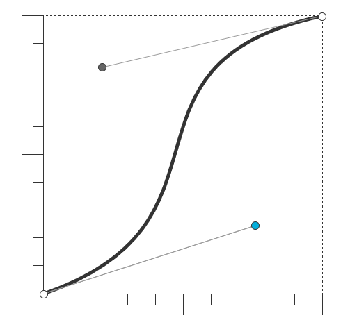
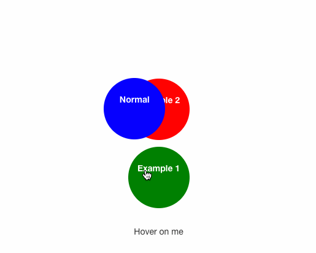
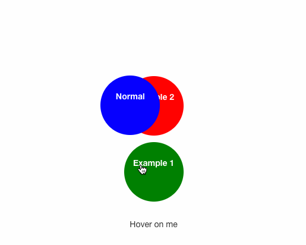

Transitions / Переходы
Transitions - простой способ анимации отдельных свойств элемента
| 26.0 4.0 -webkit- |
16.0 4.0 -moz- |
12.1 10.5 -o- |
6.1 3.1 -webkit- |
10.0 |
По данным caniuse.com поддерживают 92.85% браузеров в мире
Кузнецов Андрей Николаевич, для школы № 31
| 26.0 4.0 -webkit- |
16.0 4.0 -moz- |
12.1 10.5 -o- |
6.1 3.1 -webkit- |
10.0 |
По данным caniuse.com поддерживают 92.85% браузеров в мире
#example-1 {width: 300px;border: 2px solid #333;cursor: pointer;transition: width 1s;}
#example-1:hover {width: 600px;}
transition:[transition-property][transition-duration][transition-timing-function][transition-delay];
Содержит название CSS-свойств, к которым будет применен эффект перехода. Можно указывать как transition-property: <Имя свойства>
| Значение | |
| none | Отсутствие свойства для перехода. |
| all | Значение по умолчанию. Применяет эффект перехода ко всем свойствам элемента. |
Задает промежуток времени, в течение которого должен осуществляться переход. Можно указывать как transition-duration: <Время>
| Значение | |
| Время | Время перехода указывается в секундах или миллисекундах, например, 2s или 5ms. |
Свойство задаёт временную функцию, которая определяет скорость перехода объекта от одного значения к другому. Если вы определяете более одного перехода для элемента, например, цвет фона элемента и его положение, вы можете использовать разные функции для каждого свойства.
Может иметь значения:ease,
linear,
ease-in,
ease-out,
ease-in-out,
cubic-bezier(x1, y1, x2, y2)
На сайте roblaplaca.com вы сможете построить любую траекторию перехода.
Необязательное свойство, позволяет сделать так, чтобы изменение свойства происходило не моментально, а с некоторой задержкой. Можно указывать как transition-delay: <Время>
| Значение | |
| Время | Время задержки перехода указывается в секундах или миллисекундах. |
Примеры переходов для различных свойствdiv {transition: all 1s ease 0s;}
CSS3 трансформации изменяют размер, форму и положение элемента на веб-странице с помощью свойства transform. Трансформации преобразовывают элемент, не затрагивая остальные элементы веб-страницы, т.е. другие элементы не сдвигаются относительно него.
По умолчанию трансформация происходит относительно центра элемента. Трансформации не действуют на строчные элементы display: inline.
| 36.0 4.0 -webkit- |
16.0 3.5 -moz- |
23.0 10.5 -o- |
9 3.1 -webkit- |
10.0 9.0 -ms- |
По данным caniuse.com поддерживают 93.25% браузеров в мире
Свойство задаёт вид преобразования элемента. Свойство описывается с помощью функций трансформации, которые смещают элемент относительно его текущего положения на странице или изменяют его первоначальные размеры и форму.
matrix() — любое числоtranslate(), translateX(), translateY() — единицы длины (положительные и отрицательные), %scale(), scaleX(), scaleY() — любое числоrotate() — угол (deg, grad, rad или turn)skew(), skewX(), skewY() — угол (deg, grad, rad)Сдвигает элемент на новое место, перемещая относительно обычного положения вправо и вниз, используя координаты x и y, не затрагивая при этом соседние элементы. Если нужно сдвинуть элемент влево или вверх, то нужно использовать отрицательные значения.
.box:hover {transform: translate(-20px, 20px);}
Масштабирует элементы, делая их больше или меньше. Значения от 0 до 1 уменьшают элемент. Первое значение масштабирует элемент по ширине, второе — по высоте. Отрицательные значения отображают элемент зеркально.
.box:hover {transform: scale(2, 0.5);}
Используется для деформирования (искажения) сторон элемента относительно координатных осей. Если указано одно значение, второе будет определено браузером автоматически.
.box:hover {transform: skewX(20deg);}
Поворачивает элементы на заданное количество градусов, отрицательные значения от -1deg до -360deg поворачивают элемент против часовой стрелки, положительные — по часовой стрелке. Значение rotate(720deg) поворачивает элемент на два полных оборота.
.box:hover {transform: rotate(720deg);}
Можно объединить несколько трансформаций одного элемента, перечислив их через пробел в порядке проявления.
div:hover {transform: scale(1.5) rotate(-10deg);}
Позволяет сместить центр трансформации, относительно которого происходит изменение положения/размера/формы элемента. Значение по умолчанию — center, или 50% 50%. Задаётся только для трансформированных элементов. Пример.
div:hover {transform-origin: 20% top;}
 
